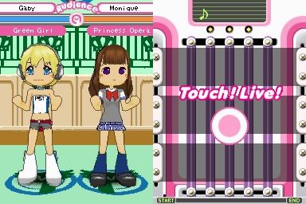
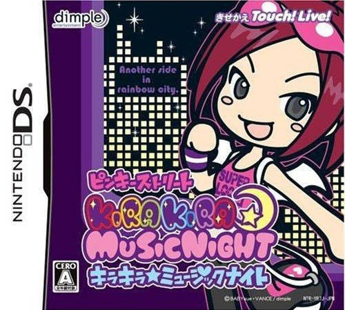

El juego se enuentra en la consola Nintendo Ds. Hay dos juegos que estan conectados entre si . El juego muestra a nuestra protagonista queriendo triunfar en la musica, en el medio se encuentra con "enemigas", la principal es
Cada una de ellas tiene su propio mapa donde hay tiendas para customizar a tu personaje, o tambien podes desbloquear ropa terminando canciones o en la maquina de capsulas
El juego es ritmico, dificultad media y al mismo tiempo exploras mucho sobre moda japonesa ya que hay estilos diferentes. Es de corta duracion pero, a medida que pasas de mapas, se hace mas dificil

